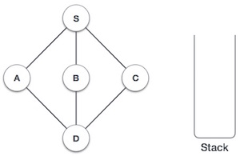

We shall not see the implementation of Depth First Traversal (or Depth First Search) in C programming language. For our reference purpose we shall follow our example and take this as our graph model −

#include <stdio.h>
#include <stdlib.h>
#include <stdbool.h>
#define MAX 5
struct Vertex {
char label;
bool visited;
};
//stack variables
int stack[MAX];
int top = -1;
//graph variables
//array of vertices
struct Vertex* lstVertices[MAX];
//adjacency matrix
int adjMatrix[MAX][MAX];
//vertex count
int vertexCount = 0;
//stack functions
void push(int item) {
stack[++top] = item;
}
int pop() {
return stack[top--];
}
int peek() {
return stack[top];
}
bool isStackEmpty() {
return top == -1;
}
//graph functions
//add vertex to the vertex list
void addVertex(char label) {
struct Vertex* vertex = (struct Vertex*) malloc(sizeof(struct Vertex));
vertex->label = label;
vertex->visited = false;
lstVertices[vertexCount++] = vertex;
}
//add edge to edge array
void addEdge(int start,int end) {
adjMatrix[start][end] = 1;
adjMatrix[end][start] = 1;
}
//display the vertex
void displayVertex(int vertexIndex) {
printf("%c ",lstVertices[vertexIndex]->label);
}
//get the adjacent unvisited vertex
int getAdjUnvisitedVertex(int vertexIndex) {
int i;
for(i = 0; i<vertexCount; i++) {
if(adjMatrix[vertexIndex][i] == 1 && lstVertices[i]->visited == false) {
return i;
}
}
return -1;
}
void depthFirstSearch() {
int i;
//mark first node as visited
lstVertices[0]->visited = true;
//display the vertex
displayVertex(0);
//push vertex index in stack
push(0);
while(!isStackEmpty()) {
//get the unvisited vertex of vertex which is at top of the stack
int unvisitedVertex = getAdjUnvisitedVertex(peek());
//no adjacent vertex found
if(unvisitedVertex == -1) {
pop();
}else {
lstVertices[unvisitedVertex]->visited = true;
displayVertex(unvisitedVertex);
push(unvisitedVertex);
}
}
//stack is empty, search is complete, reset the visited flag
for(i = 0;i < vertexCount;i++) {
lstVertices[i]->visited = false;
}
}
int main() {
int i, j;
for(i = 0; i<MAX; i++) // set adjacency {
for(j = 0; j<MAX; j++) // matrix to 0
adjMatrix[i][j] = 0;
}
addVertex('S'); // 0
addVertex('A'); // 1
addVertex('B'); // 2
addVertex('C'); // 3
addVertex('D'); // 4
addEdge(0, 1); // S - A
addEdge(0, 2); // S - B
addEdge(0, 3); // S - C
addEdge(1, 4); // A - D
addEdge(2, 4); // B - D
addEdge(3, 4); // C - D
printf("Depth First Search: ");
depthFirstSearch();
return 0;
}
If we compile and run the above program then it would produce following result −
Depth First Search: S A D B C